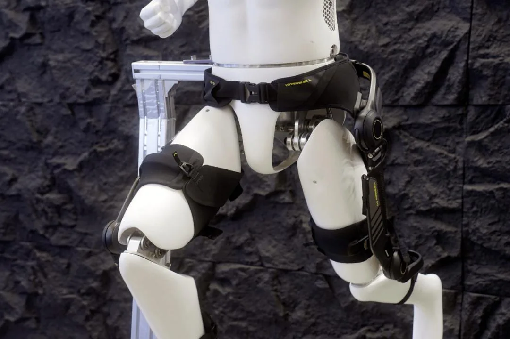

China's Frameless Torque Motor Suppliers
The ring motors that drive exoskeleton joints.
In August 2026 IDC released its first China exoskeleton market report: 2025 revenue exceeded ¥1.6B on about 26,000 units shipped. Medical rehabilitation holds the value; consumer assist sells the volume. Now long-term care insurance is opening the reimbursement door — and analysts project 41% growth in 2026.

On August 4, 2026, IDC published its first-ever China exoskeleton market share report, turning a niche hardware category into a counted industry: 2025 revenue over ¥1.6B, shipments about 26,000 units. Medical rehabilitation dominated market value — roughly ¥1.42B and 3,200 units — while consumer-assist products contributed more than 70% of all units shipped. A "wearable robot" market that was a lab curiosity five years ago now has real volume, real companies and — crucially — a reimbursement channel opening.
| Segment | Medical rehab | Consumer assist | Industrial | Military/special |
|---|---|---|---|---|
| 2025 value share | ~53-68% | ~17% | ~22-25% | ~5-10% |
| 2025 units | ~3,200 | ~19,000 (70%+) | scaling | early commercial |
| Gross margin | 65-75% | — | 35-50% | — |
| Lead players | UlsRobotics, Fourier, Kangdao | Hypershell, Kinqtec | Haier AI, industrial OEMs | SOE suppliers |
Sources: IDC China Exoskeleton Market Share 2025 (Aug 2026); LeadLeo/Toubao segment estimates. Total-market estimates range ¥1.6B (IDC) to ¥4.2B (broader definition).
Hypershell (极壳科技) is the world's top-selling consumer exoskeleton brand, shipped to 70+ countries, with Everest summit assists and Qinghai-Tibet glacier research on its resume. Its new Halo full-leg exoskeleton — 2.6kg, four motors with 1,490W peak output, AI gait prediction (HyperIntuition 2.0), 20km range from a 370g battery, carbon-fiber and titanium frame — debuted domestically at the 2026 Bund Summit this week (early-bird ¥15,999). It is the clearest sign the category is moving from "gadget" to "outdoor gear."
Rehabilitation exoskeletons are the profit engine. UlsRobotics (程天科技) raised a nine-figure Series B+ led by ABC Capital in March 2026, and pushed a three-technology fusion — non-invasive EEG interface, spinal-cord electrical stimulation and a lower-limb exoskeleton — through trials at Tongji Hospital, with a Wuhan Zhongnan Hospital patient driving her exoskeleton by brain signal in May. Fourier Intelligence (already profiled in our elderly-care analysis) landed a ten-million-yuan rehabilitation contract at Malaysia's PERKESO center — Southeast Asia's largest rehab facility — in June. Kangdao Medical puts brain-computer-interface lower-limb exoskeletons in 100+ hospitals. A China News Service story this month tracked a consumer buying two exoskeletons (¥14,000 and ¥7,700) for his mother — the first mass retail signals.
Industrial assist exoskeletons (lifting, logistics, manufacturing) are scaling with players like Haier's AI exoskeleton, which opened its first Shanghai store in March and expanded through August. The biggest near-term catalyst, though, is policy: long-term care insurance (长护险) is beginning to cover exoskeletons — industry analysts call it the opening of a "ten-billion-yuan rehabilitation robot market." Combined with the 14th Five-Year bio-economy plan's support for intelligent rehab equipment, the reimbursement door changes everything: hospitals and care chains no longer need to justify the capex themselves.
Exoskeletons are actuator-dense machines — exactly where China's supply chain is deepest. The frameless motors, planetary roller screws and integrated actuators powering humanoids are the same components driving exoskeleton cost down. Add aging demographics (see our elderly-care piece: 320 million seniors), and the world's biggest rehabilitation + consumer walking market is being built with Chinese motors, Chinese frames and Chinese price curves.
China's exoskeleton market exceeded ¥1.6B (RMB 16亿元) with about 26,000 units shipped in 2025, according to IDC's first China exoskeleton report (Aug 2026). Medical rehabilitation holds the majority of market value (~¥1.42B, ~3,200 units), while consumer assist contributes over 70% of unit volume.
Hypershell (极壳) leads consumer exoskeletons — the world's top consumer-exoskeleton seller, shipped to 70+ countries. UlsRobotics (程天科技) and Fourier Intelligence lead medical rehabilitation; Kinqtec (肯綮) covers 50+ countries overseas.
Three live use cases: medical rehabilitation (spinal-cord injury, stroke, post-surgery gait training), consumer assist (hiking, climbing, scenic-area rentals, elderly mobility) and industrial support (lifting and carrying in factories and logistics).
Three drivers: (1) long-term care insurance (长护险) is beginning to cover exoskeletons, opening a huge reimbursement channel; (2) policy support under the 14th Five-Year bio-economy plan; (3) China's motor and actuator supply chain is cutting costs — the same components that power humanoids.
The ring motors that drive exoskeleton joints.
237 nursing chains, ¥420M — the care market exoskeletons plug into.
The component base shared with every wearable robot.
The $12B muscle market behind powered joints.
Company profiles, product pages and supplier analysis for China's robotics ecosystem.